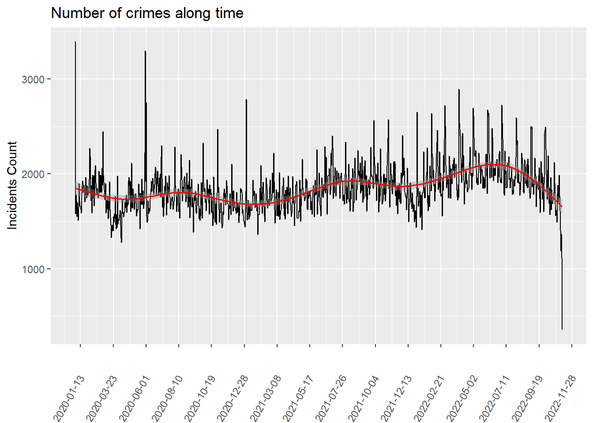
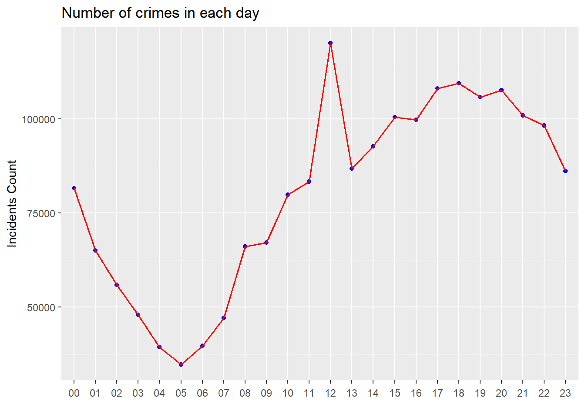
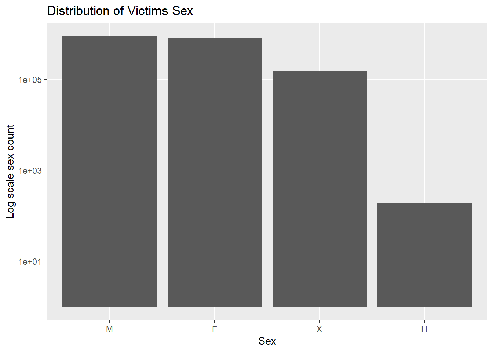
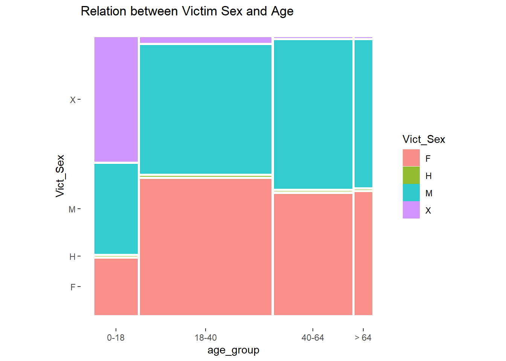
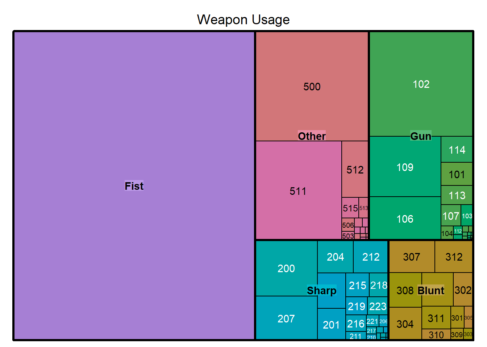
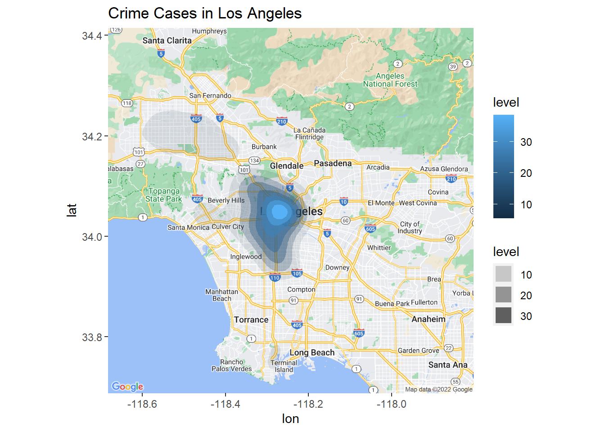

Chapter 4 Results
4.1 Number of cases along time

From the plot above, we can see that if we take a closer look at each month, the number of crime cases goes up and down: it may increase rapidly at a certain time, and then decrease dramatically in the next month. So there seem not exist a deterministic pattern like crime cases will increase in a certain period of time. The trend here appears to be a little bit random. Moreover, another finding is that the number of crime cases drops dramatically recently. One possible reason is that the data points in recent period are not as dense as before, which gives us misleading information that the number cases decrease recently.
4.2 Occuring Time in each day

First of all, we can observe that most crimes are concentrated during the late afternoon and evening while few are occurred in the morning. To be specific, the number of crime cases are over 30k from 15pm to 22pm. And at 12am, the number of cases start to decrease dramatically, reaching the lowest point at 5am. Then, it starts increases after 6am. The finding here is aligned with our intuition that criminals will usually perform crimes at night to avoid being caught.
4.3 Age Distribution in victims
From the two plots, we can observe the overall distribution of the victims’ ages. First of all, the most dominant group is the 18-40 age group, which are generally adults. And the group with least crimes is “>64” age group, which mainly consists of elders. One possible reason is that most elders will stay at home, which significantly reduce their chances of encountering crimes. However, for the adults, since they need to work, they need to stay outside for most of time, which increases the possibility of exposing to dangers.
4.4 Sex Distribution in victims

From the histogram above, we can see that there are equal number of males and females in the victims. And other types of gender only occupy very small proportions.
4.5 Relation between Victim Age and Sex in Victims

From the mosaic plot above, we can see that in the teenagers group, 0-18, there are more male victims than female ones. And in other groups, the number of male and female victims are very close. And as age increases, the proportions of male victims slightly increases, which suggests that male should take more cautions in their safety when they are travelling. And for the unspecified gender X, as age increases, its proportion decreases rapidly.
4.6 Weapon Usage
 From the graph above, we can observe that the most frequent type of weapon is the fist, which is often used in fights. This aligns with our intuition because fights are much more frequent compared with other types. Furthermore, the second most frequent weapon besides Other is the gun. Comparing with the fist, gun will usually cause more severe consequence. And when we are travelling, we should definitely avoid this type of crime. The remaining two types of weapons are sharp and blunt. Even though they will not create much damage as gun, tourists should try to avoid as well.
4.7 Number of cases in spatial
The bar char shows the number of crime cases happened in every area.
However, this does not reflect real spatial distribution
- We checked the longitude and latitude, and found that this
AREA_NAMEcolumn can just reflect the police station.
- We checked the longitude and latitude, and found that this

Note: We use sample to prevent crime cases being too dense to show in the LA map.
As we can see in the graph,
Most crime cases happened in the central area of LA
Some other happened in the northwestern area of LA
It seems intuitive that most crime cases are in the central part, which is consistent with our bar chart. To observe more information, We decided to explore details in the city center.
Note: Here we use the full data to highlight the peak
After we zoom into the central area:
There are two peaks
One is in Hollywood.
Another is in the middle part, including Fashion District and Skid Row.
To figure out the reason for this phenomenon, we collected some interesting statistics from Mapping L.A.. Although some data is not up-to-date, we still consider it as a reliable explanation for the distribution, since these population-related data will not change dramatically:
Population density Obviously, high population density may lead to high number of crimes. The density in Hollywood is 22,193 people per square mile, among the highest densities for the city of Los Angeles. This can explain the relatively high crime density in that area. However, the downtown area only has 4,770 people per square mile, among the lowest densities for the city of Los Angeles, which means we can’t simply attribute the high crime rate to high population.
Income In Hollywood, there is a $33,694 median household income (2008 dollars), low for the city of Los Angeles and low for the county In downtown, there is a $15,003 median household income (2008 dollars), low for the city of Los Angeles and low for the county Both areas are low in income, it makes sense that lower income leads to higher crime rate.